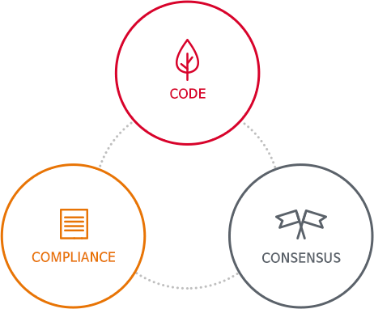

윤리경영
SK 인포섹의 의지와 약속
SK인포섹은 SKMS를 기반으로 윤리규정 및 지침을 제정하여 구성원의 윤리적 가치관 함양과기업경영 활동에 있어서 공정한 거래로 윤리경영을 실천하고, 고객, 주주, 협력회사 및 경쟁사, 임직원, 사회의 모든 이해관계자의 행복을 추구하고 있습니다.
윤리경영 체제
윤리경영은 브랜드의 가치와 기업 이미지를 제고하고, 이해관계자들의 신뢰를 얻어 책임 있는 기업시민의 일원으로서 회사가 존립할 수 있는 근간으로 여겨지고 있습니다. SK인포섹은 이러한 윤리경영 실천을 기업문화로 정착하기 위해 3C (Code, Compliance, Consensus) 기반의 체계를 정립하여 사회적 책임을 다하고자 노력하고 있습니다.

제도
- 윤리경영 제도 운영
- 자정 시스템 운영
- 내부 제보 제도 및 제보자 보호
규정
- 윤리경영실천규정
- SK리더용 윤리경영 FAQ
공감대 형성
- 임직원 소통/참여 프로그램
- 윤리경영 수준 진단
- 윤리경영 교육 프로그램 개발/시행
윤리경영 상담/제보
SK인포섹은 기업윤리에 위배되는 사항에 대한 제보를 받고 있으며,
제보자와 접수된 내용은 철저하게 보호되고 있습니다.
제보자와 접수된 내용은 철저하게 보호되고 있습니다.